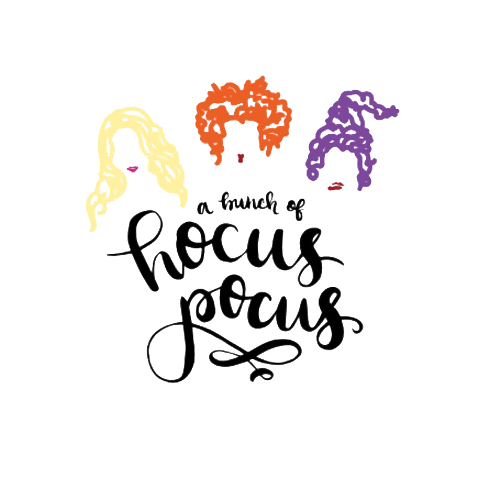
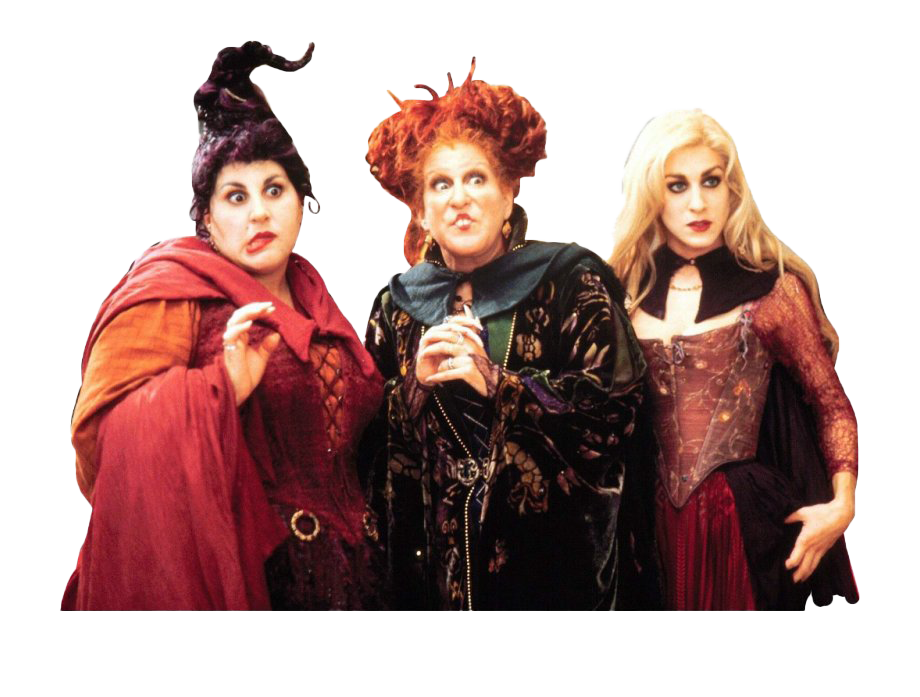

HOCUS POCUS
Hocus Pocus (El retorno de las brujas en España y Abracadabra en Hispanoamérica) es una película del año 1993, dirigida por Kenny Ortega. Ambientada en el día de Halloween, relata el retorno de tres brujas a la civilización, y cómo unos chicos deben derrotarlas antes de que se conviertan en inmortales.
PERCY JACKSON TRILOGIA
- Historia
El 31 de octubre de 1693, durante los juicios por brujería de Salem, Thackery Binx ve a su hermana Emily adentrarse en el bosque con una anciana dirigiéndose a la cabaña de tres brujas. Allí, las hermanas Sanderson Winifred, Mary y Sarah, hacen un hechizo en Emily para absorber su juventud y recuperar la suya, matándola en el proceso. Binx confronta a las brujas, quienes lo transforman en un gato negro inmortal con el fin de que viva con la culpa de no haber podido salvar a Emily. Los habitantes del pueblo, dirigidos por el padre de Binx y Emily, encuentran la casa de las brujas y esconden a Emily y tratan de ocultarse, diciendo que son solo mujeres, pero un descuido, Sarah grita a todos que “sacándole la vida a niños inocentes”, quién después capturan y ahorcan a las brujas; pero antes de morir, Winifred hace un hechizo que dicta que las hermanas resucitarán cuando en una luna llena en la víspera del Día de Todos los Santos alguien virgen encienda la vela de llama negra. Después de esto, el gato Binx promete proteger la cabaña para asegurarse que nadie invoque a las brujas.
300 años después, el 31 de octubre de 1993, Max Dennison se muda de Los Ángeles a Salem con sus padres y su hermana Dani. Mientras exploran la ciudad, él y Dani se encuentran con Allison cuya familia mantiene la cabaña de las Sanderson como un museo. Max sugiere que vayan ahí para impresionar a Allison y le promete a Dani acompañarla al año siguiente a pedir dulce o truco si acepta ir con ellos.


Investigando dentro de la cabaña, Max enciende la vela de llama negra y resucita a las brujas, quienes planean continuar su plan de succionar las vidas de todos los niños de Salem comenzando con . Max, Dani y Allison logran escapar y el primero roba el libro de hechizos de Winifred a petición de Binx. Las brujas los siguen hasta el cementerio donde Winifred resucita a su novio infiel: Billy Butcherson, ahora como zombi con el fin de que los persiga. En el pasado, Billy había sido encontrado teniendo relaciones sexuales con Sarah, así, Winifred la mayor de las hermanas lo envenenó y le cosió la boca para que no pudiera decir sus secretos, aun estando muerto. Las tres brujas tratan de adaptarse al siglo XX, pero se horrorizan al saber de la existencia del Halloween. Pese a esto intentan seguir con sus planes para no desintegrarse a la salida del sol. Ellas buscan a los niños a través de la ciudad usando el sentido del olfato de Mary. Las brujas llegan a casa de un hombre, creyendo que es el maestro, y dejan sus escobas, hasta que por un descuido tres niñas, disfrazadas de ellas se las roban. Pero luego, cuando la esposa del hombre descubre a Sarah bailando con su esposo y las corren de su casa, ahuyentándolas con su perro. Pero descubren que les robaron las escobas y los niños creyendo que son diablillos que en realidad son los niños disfrazados y que así se convirtió la víspera de Halloween, por asombro de las brujas. Allison, Max y Dani encuentran a los padres de estos últimos en una fiesta de Halloween, donde Winifred hechiza a los asistentes para bailar y cantar después de interpretar una versión alternativa de «I Put a Spell on You». Los chicos deciden ir a la escuela y allí atrapan a las brujas en un horno para quemarlas vivas. Cuando ellos celebran pensando que las han matado las brujas reviven y secuestran a Dani y Binx después de que Max y Allison abrieran el libro de hechizos. Posteriormente, Sarah usa su voz de sirena para hipnotizar y atraer a los niños de Salem a la cabaña de las Sanderson. Max y Allison rescatan a Dani y Binx con la camioneta del Papá de Max, haciendo creer a las brujas que la salida de sol se adelantó una hora. Además van por ellos y también para vengarse de Dani por llamarle “horrorosa”.


De vuelta en el cementerio Max se encuentra con Bill, y éste toma la navaja de Max para cortar su boca cosida y después insultar a Winifred uniéndose a Max para proteger a Dani. Las brujas los atacan y Winifred los amenaza con robar la vida de Dani con la poción que lograron salvar después de que Max tirara toda la del caldero. Binx salta sobre Winifred y hace que ésta suelte la botella con la poción y Max la atrape por lo que Winifred arroja a Binx al suelo y lo hiere de muerte. En vez de romper el frasco Max lo bebe en forma de sacrificio para así evitar que mate a Dani. Cuando el sol sale, Winifred no logra robar la juventud de Max pues cae en el suelo sagrado del cementerio hasta hacerse piedra, hasta que finalmente sale el sol y después que Sarah y Mary se hacen polvo, incluyendo a Winifred. Mientras Billy regresa a su tumba, Binx muere liberando su alma, este agradece a Max, Dani y Allison por la ayuda y se despide, antes que Emily aparezca y ambos puedan descansar juntos.
Durante los créditos finales, los asistentes de la fiesta son librados del hechizo y regresan a casa. En la cabaña, Jay y Ernie (apodado a sí mismo como Ice) los dos adolescentes que molestaban a Max y a Dani, se mantienen presos en las jaulas en que las tres malvadas brujas los habían puesto, mientras pasan el tiempo cantando «Row, Row, Row Your Boat». Sin saberlo, el libro de hechizos de Winifred abre su ojo.


HOCUS POCUS 2
Veintinueve años después, Bette Midler, Kathy Najimy y Sarah Jessica Parker, vuelven a ponerse en la piel de las recordadas hermanas Sanderson. Vimos la secuela antes que nadie y esta este es nuestro balance. La película se estrena este viernes 30 de septiembre.
Corría 1993, y el estreno de “Hocus Pocus”, la cinta protagonizada por Bette Midler, Kathy Najimy y una joven Sarah Jessica Parker fue un fracaso de taquilla al recaudar tan solo US$ 39 514 713. Ese año, la exitosa “Jurassic Park” arrasaba en popularidad al nivel mundial y era la favorita de grandes y chicos. Un dato no menor para explicar el traspiés de la también llamada “Abracadabra” es que aún tratándose de brujas y Halloween, fue estrenada en julio y no en octubre. Cosas de los estudios de cine que no abordaremos en este artículo.
Años después, el tiempo le dio una segunda oportunidad a “Hocus Pocus”, y fue la televisión el medio que terminó por convertirla en una película de culto. A la fecha es de las más recordadas cuando de cintas de terror para niños se trata.

 El regreso de las hermanas Sanderson
Veintinueve años después, la secuela de “Hocus Pocus” llega al streaming, de la mano de Disney+. Protagonizada por su elenco original y un reparto de jóvenes actores, la historia se traslada al 2022, año en que las hermanas Sanderson reviven nuevamente después de haber sido enviadas al más allá en la película original.
La trama de la cinta de 1993 es muy sencilla. Tres hermanas brujas llamadas Winifred, Sarah y Mary, hechizan y toman el alma de una niña para recuperar su juventud y precaria belleza. Haciendo uso de un libro mágico, las inseparables hechiceras intentarán buscar su inmortalidad hechizando a los niños de Salem. En este intento, las cosas no saldrán como esperaban y terminarán siendo derrotadas y condenadas al infierno por un grupo de adolescentes.
La historia de la secuela también es simple pero a diferencia de su antecesora, esta profundiza en el vínculo que une a las tres hechiceras. Así, los primeros minutos nos muestra a Winifred, Mary y Sarah viviendo su niñez como huérfanas y el origen de su relación con el libro mágico.
Asimismo, nos revela el liderazgo, responsabilidad y amor de la niña mayor con sus hermanas menores, a pesar de su carácter egocéntrico y un tanto egoísta.
El regreso de las hermanas Sanderson
Veintinueve años después, la secuela de “Hocus Pocus” llega al streaming, de la mano de Disney+. Protagonizada por su elenco original y un reparto de jóvenes actores, la historia se traslada al 2022, año en que las hermanas Sanderson reviven nuevamente después de haber sido enviadas al más allá en la película original.
La trama de la cinta de 1993 es muy sencilla. Tres hermanas brujas llamadas Winifred, Sarah y Mary, hechizan y toman el alma de una niña para recuperar su juventud y precaria belleza. Haciendo uso de un libro mágico, las inseparables hechiceras intentarán buscar su inmortalidad hechizando a los niños de Salem. En este intento, las cosas no saldrán como esperaban y terminarán siendo derrotadas y condenadas al infierno por un grupo de adolescentes.
La historia de la secuela también es simple pero a diferencia de su antecesora, esta profundiza en el vínculo que une a las tres hechiceras. Así, los primeros minutos nos muestra a Winifred, Mary y Sarah viviendo su niñez como huérfanas y el origen de su relación con el libro mágico.
Asimismo, nos revela el liderazgo, responsabilidad y amor de la niña mayor con sus hermanas menores, a pesar de su carácter egocéntrico y un tanto egoísta.
 El resto de la historia es muy parecida a la original, de hecho repite muchas situaciones como aquella en la que las brujas despiertan en una época muy distinta a la suya y protagonizan divertidos momentos. La secuela, por tanto, se sostiene en la nostalgia pero sobre todo en la fiel relación de hermandad que no conocíamos hasta ahora, de las Sanderson; y lo que esto podría desencadenar en la vida de las tres, al margen de la magia, la búsqueda de la eternidad y el odio a los niños.
Como les dice una vieja bruja a las hermanitas Sanderson al principio de la película: " La magia consigue unir las cosas que deberían estar unidas”.
El resto de la historia es muy parecida a la original, de hecho repite muchas situaciones como aquella en la que las brujas despiertan en una época muy distinta a la suya y protagonizan divertidos momentos. La secuela, por tanto, se sostiene en la nostalgia pero sobre todo en la fiel relación de hermandad que no conocíamos hasta ahora, de las Sanderson; y lo que esto podría desencadenar en la vida de las tres, al margen de la magia, la búsqueda de la eternidad y el odio a los niños.
Como les dice una vieja bruja a las hermanitas Sanderson al principio de la película: " La magia consigue unir las cosas que deberían estar unidas”.
 LINK PARA VER LA PELICULA EN DISNEY+
LINK PARA VER LA PELICULA EN DISNEY+